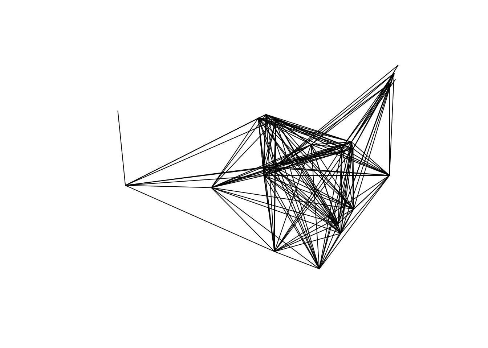
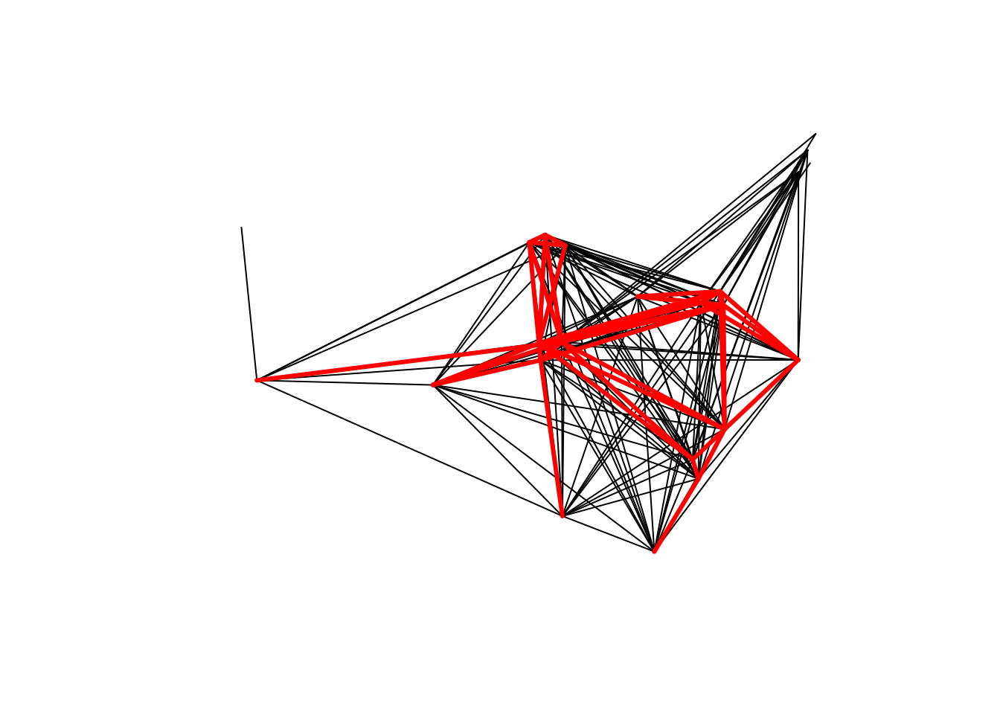
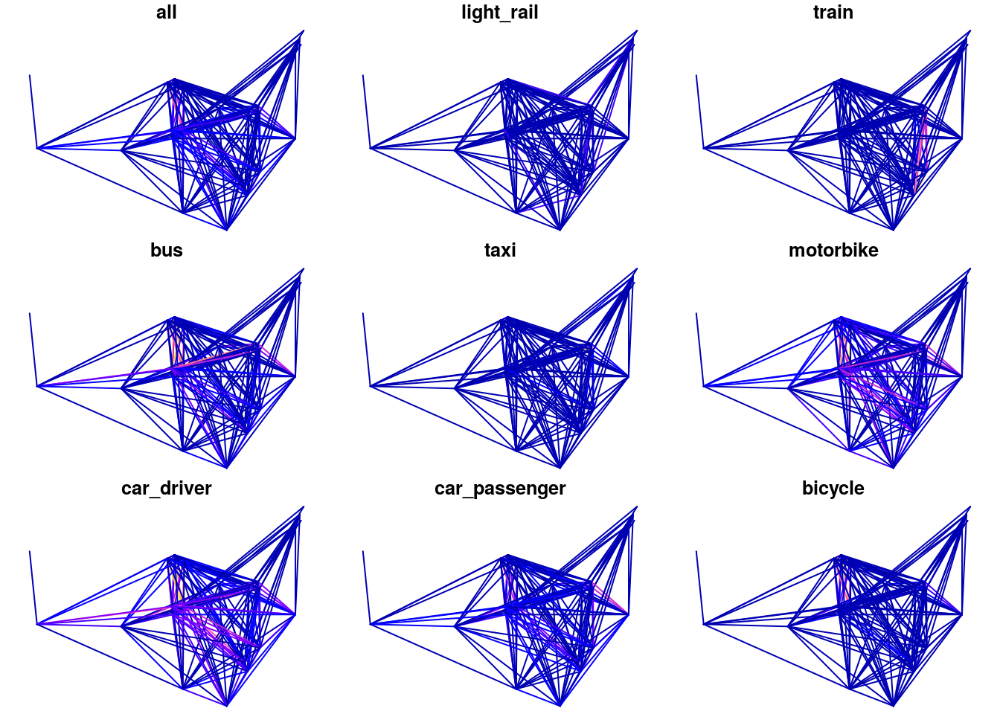
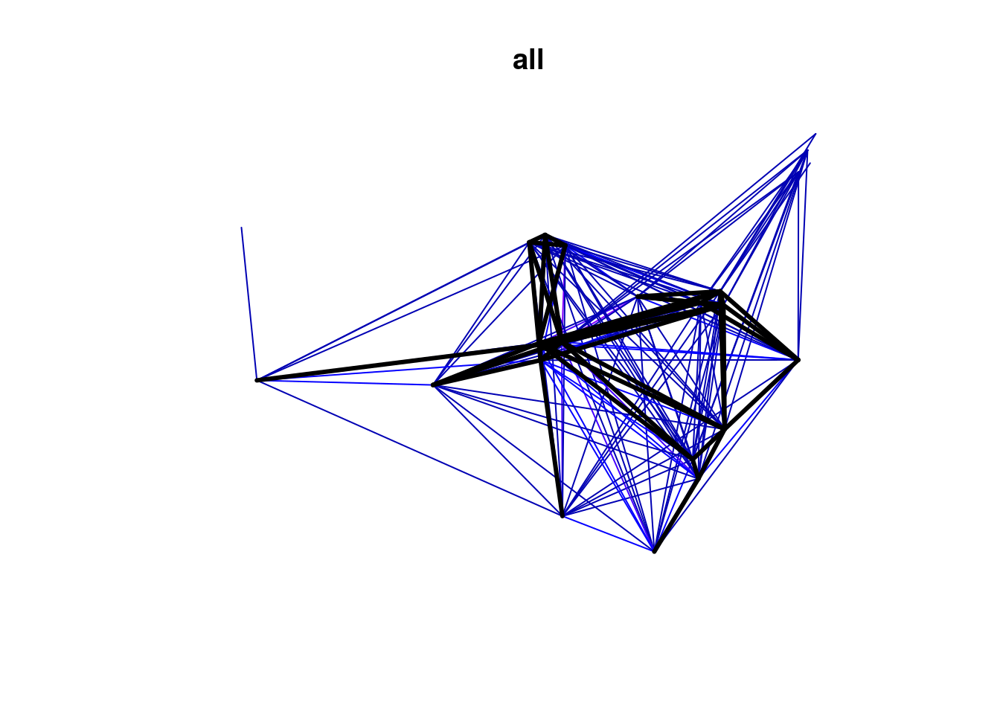

I presented yesterday on the use of geographic data in policy in a flamboyantly named talk: Can geographic data save the world (slides available from rpubs.com/Robinlovelace). The purpose of this post is to share the slides, audio and some of the ideas resulting from the talk, for the benefit of people interested in the topic but unable to attend.
If you just want to sit back and enjoy the slides with audio, rather than read this article, click here for the audio and enjoy the slides below. Otherwise please keep reading!
The venue influenced the title. The University of Liverpool’s Geographic Data Science Laboratory (GDSL) is a research powerhouse churning out papers close in the field.1
What is Geographic Data Science
The talk started with an introduction that defined terms, in which I set-out what I thought made GDS different from its older brother GIS:
## Warning: `frame_data()` is deprecated, use `tribble()`.
## This warning is displayed once per session.| Attribute | GIS | GDS |
|---|---|---|
| Home disciplines | Geography | Geography, Computing, Statistics |
| Software focus | Graphic User Interface | Code |
| Reproduciblility | Minimal | Maximal |
This was an important distinction to make in the context of having policy impact: by being open and transparent (and therefore using code rather than a non-reproducible Graphical User Interface) geographical research maximises its chances of altering decisions.
Why?
Simple: because if more people can see the data and, crucially, reproduce the results, more people will trust your research and be influenced by it.
The importance of clear methods enabled by scripted, reproducible analysis workflow, is even greater in the age of Big Data, which myself and colleagues have defined broadly as “unconventional datasets that are difficult to analyze using established methods” (i.e. those that cannot easily be solved with established products such as Microsoft Excel and ESRI’s ArcMAP) (Lovelace et al. 2016).2
Case study: the Propensity to Cycle Tool
The Propensity to Cycle Tool (PCT) is a good case study highlighting the potential policy impacts of geographical research.
Partly inspired by Singleton (2014) (which was written by a founding member of the GDSL), the PCT provides an open source evidence base highlighting where cycling has the greatest potential to grow. Crucially, the PCT is publicly accessible, meaning that not only transport planning professionals but also members of the public can use it.
If you are interested in the cycling potential at the local level in England, or if you are interested in the visualisation of geographic information at multiple levels (area, desire line, route and route network levels in this case), please take a look at the video and have a play at www.pct.bike.
Key to the tools’ potential for policy impact is its wide ranging scenarios of change which included Government Target to double cycling by 2025 and a more ambitious Go Dutch scenario in which we cycle as much as the Dutch to, accounting for geographical differences in trip distances and hilliness. The difference between the two scenarios is substantial, as illustrated by the figure below.

Figure 1: The Route Network layer illustrating the shifting spatial distribution of cycling flows in Leeds under Government Target (top) and Go Dutch (bottom) scenarios.
For a detailed account of the methods (or geographic data science if you like) underlying information on the Propensity to Cycle Tool, I recommend checking out a paper on the subject by myself and other members of the team published in the Journal of Transport and Land Use (Lovelace et al. 2017).
A reproducible example
Actions can speak louder than words or, as Linus Torvalds said:3
Talk is cheap. Show me the code.
On that basis, to show what I meant by reproducibility and ‘data carpentry’ (???) (a concept mentioned in the slides not discussed in audio for lack of time) I provided some some example code that illustrated the kinds of techniques underlying the PCT.
First download and visualise some transport data (from the Isle of Wight as, the smallest region in the PCT):
u_pct = "https://github.com/npct/pct-data/raw/master/isle-of-wight/l.Rds"
if(!file.exists("l.Rds"))
download.file(u_pct, "l.Rds")
l = readRDS("l.Rds")
library(sp)
plot(l)
Now that we have an idea of the commute patterns in the area, and the nature of ‘OD’ data (converted to geographical desire lines with the stplanr package), we can do some analysis.
sel_walk = l$foot > 9
l_walk = l[sel_walk,]
plot(l)
plot(l_walk, add = T, col = "red", lwd = 3)
library(dplyr) # for next slide...The above code subsets all the lines that have 10 or more people walking to work in the 2011 census and plots the results (as you’d expect the shorter trips are more commonly walked). It works, but could be interpretted as a little clunky. Enter dplyr, a package for data science (???):
l_walk1 = l %>% filter(All > 10) # failsDoh! That code nice ‘clean’ (well certainly consistent) code does not work because Spatial objects are not compatible with the pipe operator %>% syntax.
Enter the sf package, which represents a step change in how R handles spatial data. First let’s convert that l object into a ‘simple feature’ object:
library(sf)## Linking to GEOS 3.7.1, GDAL 2.4.2, PROJ 5.2.0l_sf = st_as_sf(l)
class(l_sf)## [1] "sf" "data.frame"plot(l_sf[6:15])## Warning: plotting the first 9 out of 10 attributes; use max.plot = 10 to
## plot all
Other than plotting multiples, one for each variable, objects of class sf behave much like objects of class Spatial, except they are also fully fledged data frames. This is what allows them to be subsetted with dplyr’s %>% operator (reproducing the square bracket subsetting above):
l_walk2 = l_sf %>%
filter(foot > 9)
plot(l_sf[6])
plot(l_walk2, add = T, lwd = 3)## Warning in plot.sf(l_walk2, add = T, lwd = 3): ignoring all but the first
## attribute
A more advanced example involves the following: take all trips in the study area less than 1km and find those in which driving a car is more common than walking (areas that could have a major car dependency issue, the policy-relevant part):
l_sf$distsf = as.numeric(st_length(l_sf))
l_drive_short = l_sf %>%
filter(distsf < 1000) %>%
filter(car_driver > foot)library(tmap)
tmap_mode("view")## tmap mode set to interactive viewingqtm(l_drive_short)Discussion
I was happy to find the talk was attended by a range of people, appropriate for a seminar about getting researchers down from the ivory towers.
Someone from local government asked me if the above analysis to find short desire lines, along which more people drive than walk, could be applied in Liverpool (yes - the above code is a good starting point for working out how!).
I was also asked how the PCT methodology could engage with established methods in transport planning. This is something that myself and others on the PCT team have discussed and it’s certainly given me a reason to revisit how best to do that (I don’t have a clear solution at the moment).
Conclusion
Geographical research clearly can have policy impacts. Calling this ‘saving the world’ may seem like hyperbole, but it in my experience it can help communicate the message that publicly-funded academics usually work in the public interest, for the ‘greater good’.
Clearly the amount and direction of the policy impacts of your work will vary depending on a range of factors, many of which will be outside your sphere of influence. However, if you are a (geographical) ‘data scientist’, it seems that ensuring that the ‘science’ in your title is taken seriously can greatly improve your policy impact.
Thus reproducibility and free publication of data and results should not be seen as a bureaucratic burden. It can help you save the world.
References
Arribas-Bel, Daniel. 2014. “Accidental, Open and Everywhere: Emerging Data Sources for the Understanding of Cities.” Applied Geography 49: 45–53.
Lovelace, Robin, Mark Birkin, Philip Cross, and Martin Clarke. 2016. “From Big Noise to Big Data: Toward the Verification of Large Data Sets for Understanding Regional Retail Flows.” Geographical Analysis 48 (1): 59–81. doi:10.1111/gean.12081.
Lovelace, Robin, Anna Goodman, Rachel Aldred, Nikolai Berkoff, Ali Abbas, and James Woodcock. 2017. “The Propensity to Cycle Tool: An Open Source Online System for Sustainable Transport Planning.” Journal of Transport and Land Use 10 (1). doi:10.5198/jtlu.2016.862.
Singleton, Alex. 2014. “A GIS Approach to Modelling Co2 Emissions Associated with the Pupil-School Commute.” International Journal of Geographical Information Science 28 (2): 256–73. doi:10.1080/13658816.2013.832765.
The name of the discipline, broadly be defined geographic data analysis, modelling and visualisation, is an interesting topic in its own right. The preferred term to describe this body of work shifts over time, and depending on who you ask. Over the years it has been referred to as Geographic Information Systems (GIS, which sounds rather old school nowadays), the more academic-sounding Geographic Information Science (GISc), the concise term of Geocomputation and the more recently coined term of Geographic Data Science (GDS).↩
See Arribas-Bel (2014) for an alternative geographical take on Big Data.↩
If I’m waxing lyrical about reproducibility and code I should practice what I preach. The source code of this article can be found at github.com/rbind/robinlovelace.↩